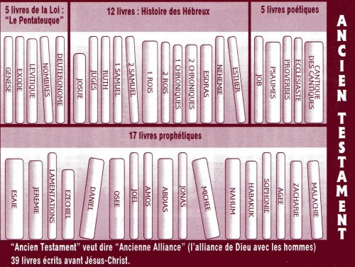

Qu'est-ce que la Bible?
Un Seul Gros Livre?
L'une de nos premiéres découvertes au sujet de la Bible est qu'il ne s'agit pas d'un seul livre, mais d'une collection de 66 livres! Bien que nous les appellions des livres, la Bible se compose en fait d'histoires, récits historiques, poésies et chansons, biographies et de nombreuses lettres (c'était avant le courrier électronique, rappelez-vous?).
Étant donné qu'elle contient tant de différents types d'écriture, la Bible n'est généralement pas lue d'un bout à l'autre comme la plupart des livres modernes (bien qu'elle puisse certainement l'être). Les croyants ouvrent généralement la Bible pour y lire des passages spécifiques, par exemple des histoires de la vie de Jésus ou des chants de louange à Dieu.
La photo ci-dessus illustre la classification des livres de la Bible en catégories.

Pour comprendre pourquoi la Bible est composée de tant de livres différents, il est utile de connaître un peu de l'histoire de la Bible et comment elle a été écrite. Dieu a commencé à inspirer les gens à écrire ses messages à l'humanité il y a environ 3 000 ans (les tous débuts sont un peu flous). Au cours d'une période d'environ 1 600 ans, quarante auteurs différents, vivant à des époques et des endroits du monde différents, ont mis par écrit ce que Dieu les avait inspirés è dire. Et pourtant, bien que la Bible ait été écrite par un groupe d'auteur très divers, elle raconte une histoire fondamentalement unique: une histoire qui guide les gens vers Jésus, l'ultime message de Dieu au monde.
La Bible peut sembler être un livre affreusement GROS. Certains pensent, ou ont entendu dire, que la Bible est mystérieuse ou difficile à comprendre. Certains auront même entendu que seuls les ministres du culte ou les prêtres peuvent réellement comprendre la Bible.
C'est pourquoi il est utile de savoir ce que la Bible est EN RÉALITÉ: le message de Dieu pour TOUS, partout, destiné à être lu par les gens ordinaires (tout le monde!).

Qu'est-ce qu'un Testament?
Le mot «testament» peut faire penser aux dernières volontés de quelqu'un (son «testament»): un document juridique déclarant ce qu'un individu souhaite qu’il arrive à sa propriété et ses possession après son décès. Dans la Bible, bien avant que Jésus ne vienne sur la terre, Dieu exprima sa volonté que les gens le connaissent et l'adorent comme leur UNIQUE Dieu; en retour, il pardonnerait aux hommes leurs péchés. La première section de la Bible, l'Ancien Testament, raconte comment l'humanité répondit à la volonté de Dieu.
L'humanité n'ayant PAS suivi la volonté de Dieu, Dieu créa une nouvelle façon d'être pardonné: il envoya Jésus, son fils unique, sur la terre pour y mourir pour les péchés de l'humanité. Les histoires de Jésus et de ceux qui choisirent de le suivre sont les histoires du Nouveau Testament, ou volonté, de Dieu pour la race humaine qu'il a créée. La Bible est ainsi divisée en Ancien Testament et Nouveau Testament: les livres écrits avant que Jésus vienne dans le monde et ceux qui ont été écrits après.

Comment trouver un passage précis dans la Bible?
Pour faciliter la lecture de la Bible, il est très utile de se familiariser avec les noms des livres qu'elle contient. Même si cela peut sembler difficile, il est très utile de MÉMORISER tous leurs noms dans l'ordre. Lancez-vous le défi de mémoriser 10 noms par jour. Lorsque vous commencez à mémoriser les 10 noms du jour, assurez-vous de réciter aussi les 10 noms précédemment mémorisés, afin que vous puissiez les réciter tous dans l'ordre
Une liste des livres de la Bible, ainsi que leurs abréviations, divisés en Ancien Testament et Nouveau Testament, se trouve à la page suivante. Utilisez-le comme guide pour les mémoriser. Certains noms peuvent sembler difficiles à prononcer. Si vous avez des questions sur la façon de prononcer le nom d'un livre, n'hésitez pas à demander à votre professeur d'études bibliques ou à un prêtre dans une église que vous fréquentez.
Ouvrez la Bible à n'importe quelle page et vous verrez de nombreux petits paragraphes portant chacun un nombre. Ces paragraphes sont appelés versets. Une collection de versets s'appelle un chapitre (tous les chapitres n'ont pas le même nombre de versets). Les seules exceptions à cela sont les livres d'Abdias dans l'Ancien Testament et les livres de Philémon 2 et 3, Jean et Jude dans le Nouveau Testament; ils ne sont pas divisés en chapitres.

Pour se référer à des passages spécifiques dans la Bible, on utilise un système par «chapitre et verset». Par exemple, si on vous réfère au seizième verset du troisième chapitre du livre de Jean, vous le verrez probablement écrit comme ceci: Jean 3:16.
C'est là que la mémorisation des noms des livres de la Bible est utile: vous saurez que Jean est le quatrième livre du Nouveau Testament. Après avoir trouvé le livre de Jean, vous chercherez le troisième chapitre et, enfin, le seizième verset. Toutes les références aux passages dans la Bible sont écrites comme dans l'exemple de Jean 3:16 (l'abréviation du livre est parfois utilisée). Si on vous renvoie à plus d'un verset, la référence sera écrite de cette façon: Exode 20:1-17. Cela signifie que vous devez vous référer aux dix-sept premiers versets du vingtième chapitre du livre de l'Exode. C'est un jeu d'enfant!
- Genèse
- Exode
- Lévitique
- Nombres
- Deutéronome
- Josué
- Juges
- Ruth
- Premier Livre de Samuel
- Deuxième Livre de Samuel
- Premier Livre des Rois
- Deuxième Livre des Rois
- Premier Livre des Chroniques
- Deuxième Livre des Chroniques
- Esdras
- Néhémie
- Esther
- Job
- Psaumes
- Proverbes
- Ecclésiaste
- Cantique des Cantiques
- Ésaïe
- Jérémie
- Lamentations
- Ézéchiel
- Daniel
- Osée
- Joél
- Amos
- Abdias
- Jonas
- Michée
- Nahum
- Habakuk
- Sophonie
- Aggée
- Zacharie
- Malachie
- Matthieu
- Marc
- Luc
- Jean
- Actes des Apôtres
- Romains
- Première Épîtree aux Corinthiens
- Deuxième Épître aux Corinthiens
- Épître aux Galates
- Épître aux Éphésiens
- Épître aux Philippiens
- Épître aux Colossiens
- Première Épître aux Thessaloniciens
- Deuxième Épître aux Thessaloniciens
- Première Épître à Timothée
- Deuxième Épître à Timothée
- Épître à Titus
- Épître à Philémon
- Épître aux Hébreux
- Épître de Jacques
- Première Épître à Pierre
- Deuxième Épître à Pierre
- Première Épître de Jean
- Deuxième Épîtree de Jean
- Troisièm Épître de Jean
- Épître de Jude
- Apocalypse